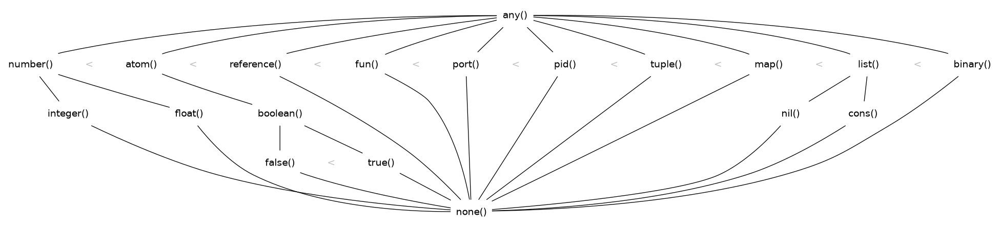

The Erlang Type System and Tags
One of the most important aspects ERTS of to understand is how ERTS stores data, that is, how Erlang terms are stored in memory. This gives you the basis for understanding how garbage collection works, how message passing works, and gives you an insight into how much memory is needed.
The Erlang Type System
Erlang is strongly typed. That is, there is no way to coerce one type into another type, you can only convert from one type to another. Compare this to e.g.
Cwhere you can coerce acharto anintor any pointer type to avoid *.

There is a partial order (<, >) on all terms in Erlang where the types are ordered from left to right in the above lattice.
The order is partial1 and not total since integers and floats are converted before comparison. Both
1 < 1.0and1.0 < 1arefalse, while1 =< 1.0,1 >= 1.0, and1 == 1.0aretrue. The number with the lesser precision is converted to the number with higher precision. Usually integers are converted to floats. For very large or small floats the float is converted to an integer. This happens if all significant digits are to the left of the decimal point.(…)
For compound structures like tuples and lists, the ordering extends recursively, so that e.g.
{1, 2} < {1, 3}but{2, 1} > {1, 3}. This means that any set of Erlang terms can be sorted in order, and this term order is defined by the language.
The Erlang Tagging System
In the memory representation of an Erlang term a few bits are reserved for a type tag. For performance reasons the terms are divided into immediates and boxed terms. An immediate term can fit into a machine word, that is, in a register or on a stack slot. A boxed term consists of two parts: a tagged pointer and a number of words stored on the process heap. The boxes stored on the heap have a header and a body, unless it is a list, which is headerless.
Currently ERTS uses a staged tag scheme, (…). The tagging scheme is implemented in
erl_term.h2.The basic idea is to use the least significant bits for tags.
The Primary Tag
00 Header (on heap) CP (on stack)
01 List (cons)
10 Boxed
11 Immediate
Immediates
00 11 Pid
01 11 Port
10 11 Immediate 2
11 11 Small integer
typedef struct atom {
IndexSlot slot; /* MUST BE LOCATED AT TOP OF STRUCT!!! */
int len; /* length of atom name */
int ord0; /* ordinal value of first 3 bytes + 7 bits */
byte* name; /* name of atom */
} Atom;
Lists
struct cons_cell {
Eterm *head; /* the value */
Eterm *tail; /* the next element */
};
Strings
IO Lists
Boxed Terms
0000 00 ARITYVAL (Tuples)
0001 00 BINARY_AGGREGATE |
001s 00 BIGNUM with sign bit |
0100 00 REF |
0101 00 FUN | THINGS
0110 00 FLONUM |
0111 00 EXPORT |
1000 00 REFC_BINARY | |
1001 00 HEAP_BINARY | BINARIES |
1010 00 SUB_BINARY | |
1011 00 [UNUSED]
1100 00 EXTERNAL_PID | |
1101 00 EXTERNAL_PORT | EXTERNAL THINGS |
1110 00 EXTERNAL_REF | |
1111 00 MAP
References:
Footnotes:
See Partial Order.